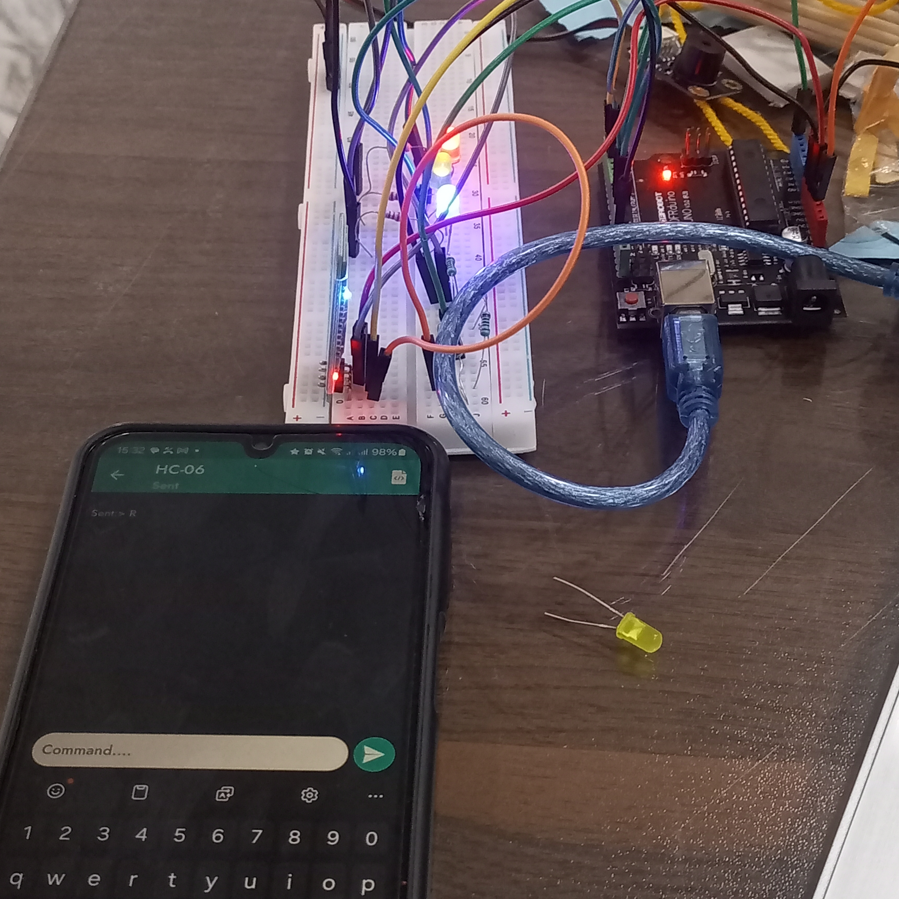
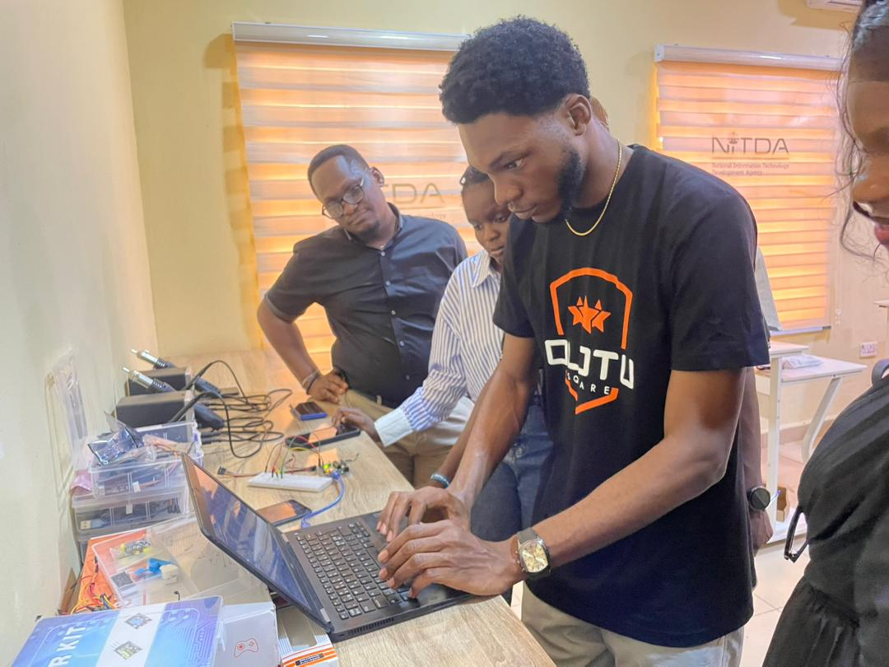

Embedded Systems & Electronics Projects
My project work focuses on practical electronics, sensor-based systems, and creative prototyping with an emphasis on real-world use.

Bluetooth Controlled LED
This embedded systems project establishes a wireless communication bridge to control physical hardware states.
- Microcontroller: Arduino Uno serving as the central logic processor.
- Communication Interface: HC-06 Bluetooth module wired to the Arduino's serial hardware pins (TX/RX) and powered via the 5V and GND rails.

Technical Trainer/ Lab Setup Consultant
This training initiative focused on building foundational technical competence in robotics and electronics while supporting digital capacity development in a real institutional environment.
- Facilitated hands-on training sessions in robotics, embedded concepts, and basic electronics for learners and early-stage technicians.
- Assisted NITDA in equipping, testing, and running the Bayelsa State ICT complex to ensure functional digital learning infrastructure and operational readiness.
STEMCafe
Educator
September 2024 - September 2025Schlumberger's Young Creators Program - A collaborative project between Schlumberger and STEMCafe
- Mentored over 120 high school students in physical computing, basic electronics, and CAD design, successfully overseeing their technical development from foundational concepts to finalized capstone projects.
Olotu Square
Robotics Instructor / Software Developer
August 2025 - Present- Facilitated trainings in robotics and basic electronics, helping learners build practical skills in hardware interaction and problem solving.
- Managed end-to-end installation, cabling, and calibration of specialized technical equipment to setup fully functional government research labs